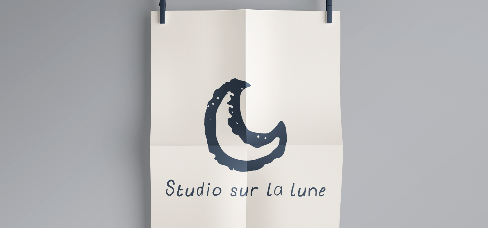

Illustrator, InDesign

Pour Vyoma Studio, j’ai conçu et développé un site pensé pour retranscrire l’univers doux et naturel du studio de yoga. J’ai pris en charge l’ensemble du projet, de la réflexion autour de l’identité visuelle et de la conception des maquettes jusqu’au design et au développement du site. J’ai également assuré son intégration, sa mise en ligne et sa maintenance, afin de garder un site cohérent, fonctionnel et évolutif.